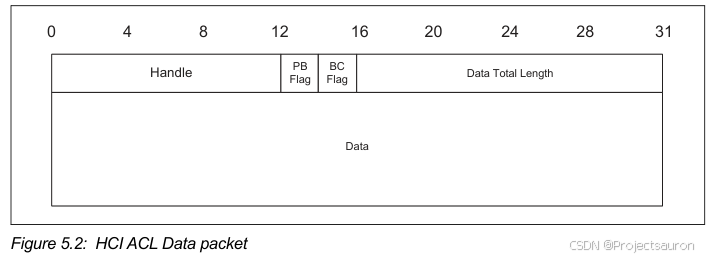

BLE 协议之传输层
[toc]

在 BLE 协议中，传输层位于 Host 和 Controller 之间，提供一种无需知道数据内容便可以传输数据的能力。其主要是通过硬件传输介质（如：UART、SDIO、USB 等），传输上层数据。
上图即是 UART 传输层的功能框图。
一、HCI 简介
Core5.4 P1728
该图展示了两个设备之间的数据传输路径。Host 通过 HCI Driver 和 Controller 硬件上的 HCI Firmware 交换数据和命令，这就是 HCI 的功能。
HCI提供了一种统一接口用来访问，控制Controller，传输层是透明的，独立于底层传输技术，并且无需关系Host传输给Controller的数据是什么内容.- 在
HOST与Controller之间，以Command与Event命令方式进行传输。Host发送Command信息到Controller，Controller将Command Status和Params以Event的形式返回给Host，最后返回Command Complete Event表示连接完成。
二、HCI 数据包
1、HCI 数据包类型
HCI 有五种类型的包格式，见下表：

HCI Command Packet：由主机向控制器发送命令，即Host -> ControllerHCI Event Packet：由蓝牙芯片上报给蓝牙协议栈的事件，即Controller -> HostHCI ACL Data Packet：用于主机和 ACL 之间的数据交换。HCI Synchronous Data Packet：用于在主机和控制器之间交换同步数据。HCI ISO Data packet：用于在主机和控制器之间交换同步数据。
在 Host 和 Controller 之间，HCI 的命令和事件类型如下：
详见 Core v5.4 P1731

2、HCI 数据包格式
下面对刚才讲到的五种 HCI 通信包的格式进行分析。
Core v5.4 P1800
2.1 HCI Command packet
HCI Comand 包用于从主机向控制器发送命令。HCI Command 数据包的格式如下图所示，下面将解释每个字段的定义。
控制器应该能够接受 HCI Command 包的数据最多 255 字节，不包括 HCI 命令包头。HCI 命令报文头是报文的前 3 个字节。

2.1.1 Opcode 字段

每个命令都分配了一个 2 字节的操作码（Opcode），用于唯一标识不同类型的命令。Opcode 参数分为两个字段，分别称为操作码组字段（Opcode Group Field，OGF）和操作码命令字段（Opcode Command Field，OCF）。
OGF：占据高 6bit，对应不同类别的蓝牙命令OCF：占据低 10bit，对应某一类别下的唯一的蓝牙命令，其中 0X3F 为制造商的调试命令.
比如有一个二维数组，也就是多个一维数组的集合，
OGF则定位到是第几个一维数组，OCF则是定位到一维数组的的具体的元素上
2.1.2 Parameter_Total_Length 字段
Paramter_Total_Length ：数据包中所有参数的长度。
2.1.3 Parameter 0 - N 字段

这个 Paramter ，每一组命令要求的参数都不一样，所以根据实际情况来选择。
2.2 HCI ACL Data packets
HCI ACL Data 包用于主机和控制器之间的数据交换。HCI ACL Data 包有两种类型：
Automatically-Flushable：自动刷新- 自动刷新包，其自动刷新的时间取决于设定的时间。
Non-Automatically-Flushable：非自动刷新- 非自动刷新，则不会自动刷新数据包。

2.2.1 Headle 字段
Handle ： 逻辑链路的通道的标识 ，这里分为三类：
1. Connection_Handles
2. Logical Link Handles
3. Physical Link Handles
Connection_Handles ：被 Primary Controller Handles 分配，标识主机和主控制器之间的逻辑通道，当一个新的逻辑链路被建立的时候， Connection_Handles 会被分配。
该 Handle 主要被用在： Connection Complete、Synchronous Connection Complete、LE Connection Complete、LE Enhanced Connection Complete 的 Event 事件中。
Host 在第一次上电或者重启的时候，第一次发送 HCI 数据包，此时分配一个 Connection_Handle 。此后，使用该 Handle 去广播。
AMP Controllers 包括两种： Logical Link Handles 和 Physical Link Handles。
对于 Host 与 AMP Controller 之间的 Data、Command 和 Event 操作，如果 Physical Link Handles 被指定，则使用该 Handle ，如果未被指定，则在指定 Connection_Handle 的地方使用 Logical Link Handles。
2.2.2 Flag 字段
Flag 包括： PB Flag 和 BC Flag，即 Packet_Boundary_Flag 与 Broadcast_Flag。
在 HCI ACL Data 包的第二个字段部分，Packet_Boundary_Flag 位于第 4 位和第 5 位，Broadcast_Flag 位于第 6 位和第 7 位。


2.3 HCI Synchronous Data packets
该数据包，被用于在 Host 和 Controller 之间交换同步数据，HCI Synchronous Data 包头是数据包的前 3 个字节。

2.3.1 Connection_Handle 字段
2.3.2 Packet_Status_Flag 字段
Packet_Status_Flag 由两个比特组成，分别位于 HCI Synchronous Data 包的第二个字节的第 4 到 5 比特之间。
该字段与 Erroneous_Data_Reporting 参数有关：
- 如果
Erroneous_Data_Reporting参数设置为 disable ，则Packet_Status_Flag字段设置为 00 - 如果
Erroneous_Data_Reporting参数设置为 enable ，则Packet_Status_Flag字段依据下面表格设置
主机应设置
Packet_Status_Flag位为 $0b00$。
2.4 HCI Event packet
每个 Command 命令发出之后，对返回的参数要求不同，根据不同的返回参数要求，返回指定的数据。
如果控制器发送一个 HCI Event 包，其中包含一个主机未屏蔽且不支持的 event code 或 LE subbevent code，则主机应忽略该包。本部分未提及的任何 Event code 或 LE subevent code 将保留供将来使用。主机应该能够接受不包括 HCI 事件包头的 255 字节数据的 HCI Event packet。
事件代码 0xFE 保留为将来使用（用于规范开发）。事件代码 0xFF 是为特定于供应商的调试事件保留的。
2.4.1 Event_Code 字段
Event_Code 用于标识不同的事件类型。

2.4.2 Parameter_Total_Length 字段
Parameter_Total_Length 表示参数总长度。
2.4.3 Event_Parameter 字段
Event_Parameter 相关参数，与上文一样，每个命令有不同的参数返回。

2.5 HCI ISO Data packets
HCI ISO Data 包用于在 Host 和 Controller 之间进行同步数据交换。一个 HCI ISO Data 包包含一个 SDU 或 SDU 的一部分。在 Host 到 Controller 的方向上，它包含的数据不能超过 Controller 支持的缓冲区大小。如果 SDU 的长度大于 Controller 的缓冲区大小，Host 可能需要对该 SDU 进行分片。Controller 不应开始向 Host 发送 SDU 或 SDU 的分片，直到所有包含该 SDU 数据的 PDU 都已接收到，或已通过最后一次传输机会而无法再接收到。HCI 产生的 SDU 片段与 ISOAL 产生的 SDU 片段无关。

2.5.1 PB_Flag 字段
2.5.2 TS_Flag 字段

2.5.3 Data_Total_Length 字段

在 Host 到 Controller 的方向，Data_Total_Length 应小于或等于控制器支持的缓冲区大小（使用 LE Read buffer size 命令的 ISO_Data_Packet_Length 返回参数返回）。
如果 PB_Flag 为 0b01 或 0b11 ，则 Data_Total_Length 可以为 0。否则，TS_Flag 为 0 时 Data_Total_Length 至少为 4，TS_Flag 为 1 时Data_Total_Length 至少为 8。
2.5.4 Time_Stamp 字段

2.5.5 Packet_Status_Flag 字段
Packet_Status_Flag 字段表示控制器通过同步物理通道接收到的报文状态。Packet_Status_Flag 字段仅在控制器发送的 HCI ISO Data 包中有效，并保留用于主机发送的数据包。

三、HCI 连接示例
HCI 连接命令流程：
- 蓝牙协议栈向芯片发送连接命令：
HCI Connect command - 蓝牙芯片上报命令状态到蓝牙协议栈：
HCI Command Complete - 连接成功后，蓝牙芯片上报蓝牙协议栈连接成功事件：
HCI LE Connect complete
更多事件类型查阅 Core
1、HCI Connect command
Core v5.4 P1843
该命令用于让 Link Manager 链路管理器去连接远程设备。
封包格式如下：
OCF：这里可以看到OCF的值，那么 OGF 值为多少呢？- 打开 Core v5.4 P1843，我们可以看到
HCI_Create_Connection命令属于LINK CONTROL COMMANDS链路控制命令组，该组 OGF 为0x01。详见 Core v5.4 P1836：“For the Link Control commands, the OGF is defined as 0x01”.
- 打开 Core v5.4 P1843，我们可以看到
BD_ADDR：要连接的远程设备的蓝牙地址，6 个字节。Packet_Type：支持的数据封包类型，2 个字节。
Page_Scan_Repetition_Mode：是否重复扫描
Clock_Offset：主从设备之间的时钟偏移。Allow_Role_Switch：是否支持主从角色转换
2、Command Complete Event
Core v5.4 P2178
当 Controller 接收到 Create_Connection 命令，会发送一个 Command Complete 事件给 Host 。
事件格式如下：
该事件被用于大多数命令发送后的状态返回。
Event Code：事件代码Num_HCI_Command_Packets：设置 Host 可以发送给 Controller 的命令包的个数，如果不允许，则设置为0

Command_Opcode：表示相应的命令代码

Return_Parameters：返回命令指定的参数
3、Connection Complete Event
Core v5.4 P2160
该事件表明了 Host 与 Controller 之间建立连接通道成功。
Event Code：事件代码Status：连接状态

Connection_Handle：连接成功后，生成的 Handle 值
BD_ADDR：连接成功后的MAC地址
Link_Type：连接类型

Encryption_Enabled：是否加密

四、小结
看一下 HCI 在协议栈中的位置 ：